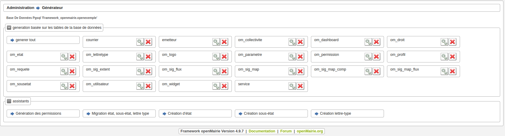
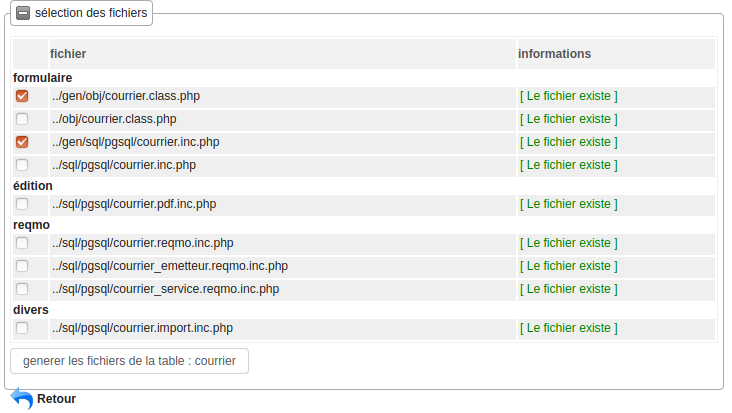
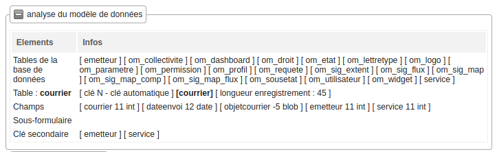
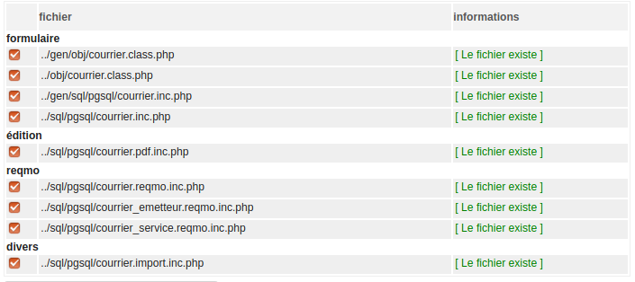
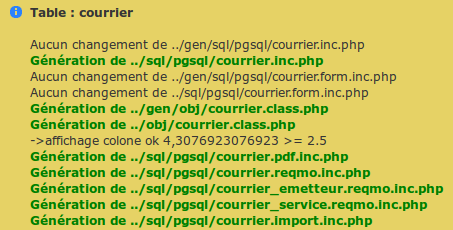
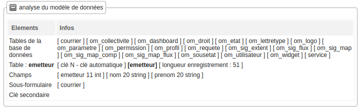
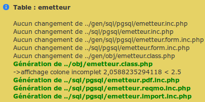
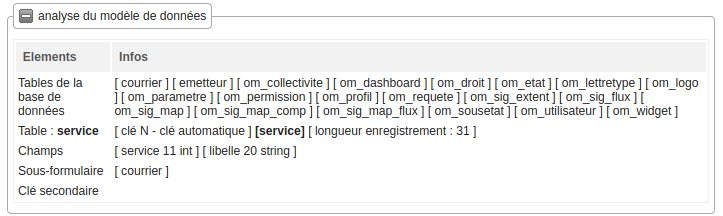
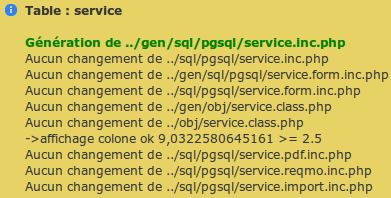

Créer les formulaires¶
Nous allons maintenant créer les formulaires à l’aide du générateur.
Pour cela, il faut aller dans le menu Administration -> Générateur.
Vous devez avoir 3 nouveaux boutons : courrier, service et emetteur.
Avant de commencer, l’utilisateur apache www-data doit avoir les droits d’écriture dans les repertoires /gen , /sql et /obj.
Générer les formulaires et édition du courrier¶
En appuyant sur le bouton de courrier, vous avez les choix de génération :
Au préalable, le générateur a fait une analyse de la base de données :
Le générateur a donc détecté 2 clés secondaires et aucun sous-formulaire.
C’est pour cela qu’il propose 3 « reqmos » : 1 « reqmo » global et 2 « reqmos » suivant les clés secondaires.
Par défaut, seules les options du formulaire sont cochées.
Si vous le refaites plus tard, seules celles fabriquées par le générateur seront cochées.
Cochez les toutes :
En cliquant sur valider, vous avez le message :
Le paramétrage utilisé est le paramétrage standard.
Vous pouvez le modifier : voir Paramétrage générateur.
L’affichage par colonne est « ok », ce qui veut dire que la taille des colonnes dans le fichier pdf sera complet (attention le script ne prend pas le champ blob).
Générer les formulaires et édition de l’emetteur¶
Nous allons procéder de la même manière avec le bouton emetteur.
L’analyse de la base de données est la suivante :
Le générateur repère un sous formulaire courrier. Effectivement, il y a une relation de un à plusieurs entre emetteur et courrier : un emetteur peut avoir 0 à plusieurs courriers.
En cliquant sur toutes les options puis en validant, vous avez le message suivant :
Générer les formulaires et édition de service¶
Nous allons procéder de la même manière avec le bouton service
L’analyse de la base de données est la suivante :
Le générateur repère un sous formulaire courrier. Effectivement, il y a une relation de un à plusieurs entre service et courrier : un service peut avoir 0 à plusieurs courriers.
En cliquant sur toutes les options, vous avez le message suivant :
